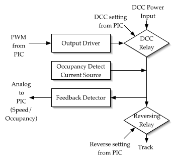
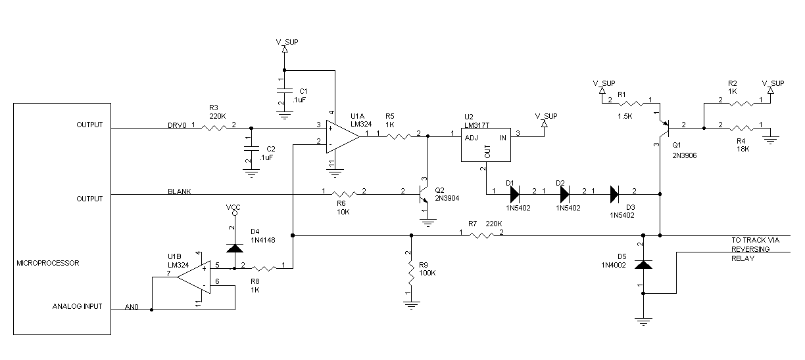

Tech Model Railroad Club Control System
System 3 Design - Block Card
James Knight
5/19/2002
Later additions by John Purbrick
5/10/2007
The Tech Model Railroad Club currently has a model train layout in MIT Building N52. For the last 40 or so years, the club has been operating with a control system built of relays and telephone crossbar switches. The goal of the present project is to replace that with a more modern system made of integrated circuits, computer software, and networks. For more information about the club see our website (http://tmrc.mit.edu/).
The ultimate goal of a model railroad control system is to allow a human operator to run more than one model railroad train around the model train layout. Running just one train at once is relatively easy - just wire all the track together to one power source, and apply power. The DC motor inside the train will change speed depending on the voltage your power source provides. With multiple trains at once, however, that is not possible anymore. You would end up with all your trains running at the same speed, and have no way of stopping just one. That is clearly undesirable. Thus, a more complex control system must be built.
In addition to supporting multiple trains, the control system should also allow the operator to "throw switches," that is, change which route the train takes, without physically moving the track or having to walk over near the switch and press a button. It is much more convenient to have the state of every switch on the layout shown, and controlled, in a central location. Another nice feature of a control system is to have a display that shows where all the trains are on the layout and where they are moving.
The old system, which is referred to as "System 2" is what is called a "block control system", which means that there are many electrically distinct pieces of track that can have power applied to them separately. A "block" is one section of track. With many electrically separate sections of track each powered individually, as long as only one train is in a block at once, every train can be individually controlled. Of course, if, for some reason, two trains do end up in the same block, they will be forever stuck together. This is thus avoided. The system is initially told which block contains each train by an operator. After the initial assignment, it automatically keeps track of when the train has moved to the next block. Because it keeps track of which blocks contain which trains, when the user asks to apply power to set the speed of one train, the system can make sure to power only that one train, and not any others. As an additional benefit from knowing the approximate location of all the trains, the system can give the operator a traffic-light signal of green, yellow, or red, depending on how much track is empty ahead of his train. System 2 was implemented in a dizzying array of telephone equipment: five 10x10 crossbar switches, 280 large relays, and lots of wires. It was 12' wide and 8.5' tall, and could handle up to 50 blocks, 50 switches, and 5 trains. Increasing any of those limits would require a significant amount of rewiring work and a large amount of additional space. Since it was built in 1966, it has operated remarkably reliably, but now, 36 years later, it is definitely showing its age.
The new system, "System 3", operates in essentially the same fashion, but with the whole thing reimplemented as software and much smaller hardware. The hardware we currently have installed can handle 80 blocks, 96 switches, and has no limit on the number of trains. Adding additional blocks and switches is as easy as ordering another PCB, and attaching it to the appropriate network. Besides the obvious benefit of more of everything in a smaller space, the new system also has the advantage of having the majority of the complicated decision-making in software, so it is much simpler to modify the behavior for more advanced functionality.
System 3 was designed and built over the last five years primarily by Alvar Saenz-Otero, John Purbrick, and myself. Tom O'Reilly has helped recently with the development of a new GUI to interface to the server, and of course there has been help and many suggestions from all the other members of the club. At this point, the majority of the work is complete, but there is always more to be done.
System 3 is comprised of the following pieces: (annotated with the people responsible, ASO=Alvar Saenz-Otero, JK=myself, JP=John Purbrick, TO=Tom O'Reilly)
Hardware:
Software:
Communications protocols:
Descriptions of the major components:
These are very simple cards which contain essentially just a shift register chain and a comparator to determine when the Imp is talking to it. Each card drives 8 switches, and can drive 8 signals and return 8 inputs as well. This was the first part of the project completed.
These cards are significantly more complex than the switch cards. They contain a PIC microcontroller and 8 copies of the block driver circuit. The block cards' main duty is to set the output speed for each block based on commands sent from the server program running on the PC. This communication occurs via the PIC serial bus that all cards are connected to. In addition to setting the output speed, the cards also use an analog-to-digital converter to watch the back-EMF of the motors to see how fast the train is actually moving. This feedback is used to adjust the output voltage, and is also returned to the server. These cards are described in much more detail in the rest of the report. (see Figures 2 and 3 for schematic and PCB layout).
The Imp is a protocol converter between the PIC network and the switch-card network. It listens to commands sent by the PC server software, and resends those destined for the switchcards. During the transition from System 2 to System 3 it has had many other functions as well, such as communicating, in a very rudimentary way, with System 2, as well as driving some legacy GUIs. As more of the smarts have moved into the server running on the PC, it has had less and less to do.
This is the main piece of software for the system. It coordinates all of the information from the hardware on the layout and the various user interfaces, and, using that information, sends out the appropriate commands to do what the user asked. The most important functionality this includes is handling "advances", that is, making sure that the next block in front of a train always has power applied to it, so that when the train gets to it, the train will not stop.
A cab is small hand-held device used to control one train. The ones we use currently have a knob to control the speed and a few buttons for functions such as reverse. It talks to the server to tell it what the requested commands are, and also receives information such as what signal the train should have, and what speed it is actually moving at. There are various ambitions to build a more complex hand-held control device with an LCD display, a soft menu system, radio communication, and other fancy things. None of that has materialized so far, however.
This program displays the state of the whole layout, that is, which blocks are occupied, which are powered and who owns them, which way switches are thrown, etc. It also allows you to control all the trains without having to use a physical cab. It talks to the server using TCP/IP, so you can actually run the GUI from anywhere on the internet, and, if we let you, you could remotely run trains as well.
The rest of this report concentrates solely on the construction of the block card software and hardware. The block card has a few pieces of essential functionality:
Train motors generally take much less than 1A, but it may take up to 1A to get them started.
A train locomotive will have very low resistance, most likely below 10Ω. A train car usually doesn't connect the rails at all (as it has no electronics in it that would require power from the rails), but we modify them with a 48kΩ resistor across the wheels. Thus, a car will have a resistance of 48kΩ. When nothing is present, there is an infinite resistance. The block card must discriminate between the three cases.
A moving motor will generate some back-EMF and this can be measured to determine what speed the motor is turning.
This can also compensate for stalled motors. If the train stalls, the block card can automatically give it a little "shove" to get it moving again. Without the ability to shove the motor out of a stall, it is impossible to move it at very low speeds.
DCC is a whole other complicated protocol where data is sent with the power onto the rails. Our block card does not actually support sending commands with the DCC signaling system, but it does support two things:
The board consists of a PIC 16F877 microcontroller, RS422 line drivers and receivers, and 8 copies of the block driver/detector circuit. All the interesting hardware is in the driver/detector circuit, so I will concentrate on that. The basic outline of how the block driver/detector is constructed is shown in Figure 1, below.

Figure 1: Block driver

Figure 2: Block driver schematic
For each block, the software on the PIC microprocessor sends out a 5V Pulse-width modulated (PWM) signal with a resolution of 1/6000th of a second and a period of 100 samples (1/60 sec). A throttle setting of 0 would output all 100 samples at 0V, and a throttle setting of n would have n samples at 5V followed by (100-n) at 0V. Thus, the signal repeats every 1/60th of a second. The output driver must convert this digital PWM signal, which of course has limited current drive capability, into a DC voltage from 0-16V at up to 1 amp in order to drive the DC model train motors.
The PWM signal is first filtered with a capacitor/resistor pair (R3, C2) with time constant = 1/45s. This minimizes high frequencies in the output waveform, said to cause motors to overheat, and also reduces audible noise, but it also leaves some pulsation to provide " pulse power" action. Next, the 0-5V input signal must be converted to a 0-16V signal to drive the rails. The signal on C2 is converted to a 0-16V signal by an op-amp (U1A) with a feedback loop. The positive terminal on the op-amp receives the input signal, and voltage from the circuit's output is fed back to the negative terminal through a 5/16 voltage divider, R7 and R9. The op-amp will therefore stabilize with an output of 16/5 times the input.
The feedback loop also contains an adjustable voltage regulator, the LM317T (U2), to provide the current that is required for the train motors. It has the characteristic that it will drive its output 1.2V above its adjustment terminal with an available current of up to 1.5A, and it is internally current limited to prevent burnout due to a short circuit; it will also shut its output down in case of overheating. A feedback loop containing a voltage regulator is somewhat unconventional, as it has slow reaction characteristics. However, that is not an issue in this case, because the reaction time is not critical. What is vitally important for the model railroad environment is protecting the circuit from overloads, and the LM317 is as close to "bomb proof" as a component can be expected to be. Because a zero voltage on the LM317's adjustment terminal still delivers 1.2V on the output, there are 3 diodes (D1-D3) on the output of the LM317 to cut the voltage to zero when needed. From the cathode of the last diode, the voltage is fed to the rails and also to the feedback voltage divider R7-R9.
Between the op-amp and voltage regulator is a circuit (parts Q2, R5, R6) for "blanking" the output. This is used by the processor to temporarily set the output voltage for every block to 0 so that the feedback detector can function properly, as described below. The blanking is done by shorting the output of the op-amp to ground through a 1kΩ resistor. Blanking is enabled for about 10/100ths of each 60hz cycle, or about 1.7msec. During the blanking, the op-amp may saturate, since the positive input is not forced to 0V, only the output. If that occurs it will drive a large voltage across the resistor, but that is not a significant problem due to the small period of time over which it can occur. One slight undesirable effect of this is that when the blanking period ends, the output voltage of the op-amp will be briefly at its maximum before it stabilizes again. This design of zeroing the output rather than the input was chosen to minimize the recovery time to get the voltage back to the requested level. If the input were forced to 0V, it would drain the filter capacitor and, because the filter has such a high time constant (1/45s) the recovery time would not be acceptable.
When the blanking interval begins, current from voltage regulator U2 turns off suddenly. The locomotive motor has inductance, and the result can be a negative-going voltage (an "inductive kick") of unknown but possibly damaging magnitude. Diode D5 provides an alternative path until current flow drops to zero. Measurements have shown that the typical time for current decay is about 1msec.
This section of the circuit (Q1 and R1, R2, R4) is designed to source about 0.25mA of current onto the rails at all times, for use by the feedback detector described next. It is a standard "poor-man's" constant current source. The voltage on the base of the PNP transistor is determined by a resistor voltage divider of 18/19, thus creating approximately 17.1V (since the power voltage is 18V). The PNP transistor has Vebat 0.6V, and thus the current through the 1.5kΩ resistor (R1) will be somewhere around 0.4V/1.5kΩ ≈, or 0.25mA. This amount of current was chosen to be small enough so that the voltage across a 48kΩ resistance on the rails is significantly less than 15V and thus distinguishable from an infinite resistance by the feedback detector.
The next portion of the circuit is the section for reading the voltage on the rails. This depends on the blanking circuit from the output driver, and the current source. The purpose of this circuit is twofold:
The analog-to-digital input of the PIC can read voltages from 0V-5V, and has a resolution of 10 bits, or 1024 steps. In order to read voltages from 0V-16V on the track, it shares the 5/16 voltage divider used by the output driver. In addition, there is a diode (D4) to make sure that the voltage does not go far over 5V and destroy the PIC, and an op-amp (U1B) which buffers the high-impedance voltage source formed by R7/R9.
If there is a finite resistance between the rails, the voltage will be pulled down by an amount determined by the resistance involved. A voltage of less than 0.2V on the rails indicates that there is a locomotive present in the block, as locomotives have a low resistance of under 10Ω. If 0.25mA flows through10Ω a voltage of 0.25mV is generated, which is well below 0.2V. A voltage in the range of 0.2V to 15.9V indicates that there is a train without a locomotive in the block. Given the ideal resistance of 48kΩ for a train car, the voltage across the tracks should be somewhere around 12V. If there are multiple cars on the train in the block, the resistors will be in parallel, so the resistance could be as low as 4.8kΩ if there are 10 cars with conducting wheels on the track (not all club cars have conducting wheels and resistors, but we are expanding the number which do). That will create a voltage of 1.2V across the rails, which is still well above the threshold of 0.2V. The differentiation between locomotive and other pieces of equipment is only used before the train starts moving to tell the computer (and so, the user) where the locomotives are.
To detect the voltage ("back EMF") generated by the turning motor, the software first activates the blanking circuit, described above, and waits a small amount of time for the voltage to stabilize. At this point, any voltage on the rail is because of the EMF of the motor turning (the occupancy detect current source does not cause a significant voltage drop, given the low resistance of a motor). Thus, we can get a fairly useful approximation of the actual speed of the motor. There are some issues with this: most motors are similar to each other and return consistent values, but there are a few that have odd circuitry that foils this scheme. Further investigation is required to determine how those locomotives are wired that causes the difference. If there is no motor in the block being powered, but only a resistance from a car, then the feedback will think the car is a motor moving at some speed. However, that does not matter, as if there is no motor in the block, it does not matter if the feedback algorithm decides to change the output voltage to compensate for the "motor" moving at the wrong speed, as there is no motor in the block to notice what the output voltage is. This speed detection will also not work with a DCC engine, as a DCC engine does not have its DC motor connected directly to the rails, but rather to internal power circuitry. Even with a DCC locomotive, the "something present" check will function as usual, as it does draw power and have a measurable impedance.
| State | rail voltage | feedback value | meaning |
|---|---|---|---|
| Unpowered | |||
| < 0.2 | < 8 | locomotive present | |
| 0.2 - 15.9 | 8 - 1020 | non-locomotive train car present | |
| > 15.9 | > 1020 | nothing present | |
| Powered not in blanking (Feedback not collected during this state) | |||
| < 15.9 | locomotive present | ||
| > 15.9 | no locomotive present | ||
| Powered during blanking | |||
| < 0.2 | < 8 | locomotive present and stalled | |
| 0.2 - 15.9 | 8-1020 | locomotive present and moving, or non-locomotive present | |
| > 15.9 | > 1020 | nothing present | |
| DCC | |||
| < 15.9 | ≤ 1020 | locomotive present | |
| > 15.9 | > 1020 | no locomotive present | |
The output path goes through two relays after coming from the output driver. The first of those is the DCC select relay. This relay determines whether the track should be driven by the output driver circuit, or by an external DCC system. DCC, or Digital Command Control, is a commercially available system for talking to "smart" locomotives, which have a decoder on board that controls the speed, lights, sound, and other auxiliary functions. While this board is not designed to directly drive DCC locomotives, it has the capability of allowing an external DCC control system to operate only those blocks that contain DCC trains, and still operate standard locomotives with a DC motor in them on the other blocks.
Some care was taken to allow the occupancy detection circuitry to operate even while a block is being driven by a DCC train.
The DCC input is an alternating square-wave voltage delivering 15V to one rail and 0V to the other rail. It communicates by altering the timing of the voltage reversals. Our detection scheme for DCC involves two diodes, in parallel but wired in opposite directions, between the DCC input and the circuitry for one rail of each block. Since the DCC signal is always present on the rails, and unlike our own power supply, we cannot assume that the DCC supply can only source current, we will not be able to pull the voltage up to 18V as we do with conventional power. Instead, we assume that when the sensed rail is in its "high" state and the block is unoccupied, the voltage will be at least one diode drop above the DCC supply's output because of current passing through Q1 and into the DCC supply (i.e. the DCC supply is sinking current). On the other hand, if the block is occupied, and there is a finite impedance between the rails, we can expect all the current from current source Q1 to flow through this impedance along with additional current from the DCC supply (now the DCC supply is sourcing current). This will cause current to flow through the other parallel-connected diode, and the voltage on the rail will fall to (nominally) 14.4V. This change is detected by the standard occupancy detect circuitry. The one complication is that half of the time, the DCC power source will be sending 15V on the other rail, and 0V on the rail the feedback detector is connected to. In that case, the processor just waits until the feedback result goes high (indicating that the DCC power source was sending 15V) before attempting to check the result for occupancy.
The next relay allows for reversing the direction of the train. The output driver is only able to drive positive voltages, so a relay is used to swap the ground rail and the power rail. Because the trains use a standard DC motor, swapping the rail with the positive voltage will make the motor run in the opposite direction. When DCC is enabled for a block, the reverse relay has no effect on the direction of the train, but still should be operated in some circumstances so that if two adjacent blocks are shorted together, their rails will not have opposite polarity.
For the "brains" of this board, we used a PIC16F877 microprocessor that runs 5MIPS and has eight 10-bit analog inputs, a flash programmable memory, a bunch of digital outputs, and built-in buffered serial port. Coming into the board from a central power supply are three voltages: 8V, 16V, and 18V. The 8V is regulated to 5V for the ICs, the 16V is regulated to 12V for the relays, and the 18V is used for track power. Our custom serial network has 3 signals coming in: 60hz synchronization pulse, token in, and serial in, as well as 2 signals going out: token out, and serial out. Externally these all use RS424 differential signaling to avoid problems with noise in the room, so there are components to turn the signal into TTL form for the PIC. There are also a variety of debugging LEDs attached to strategic places on the board.
The software on the block card has two basic pieces of functionality: handling the network I/O, and handing the board I/O. The network I/O is all done using generic code that all the PICs share.
A timer interrupt occurs every 1/6000th of a second. This counts a "hundredth" counter up from 0 and checks each of the eight throttle PWM outputs to see if its corresponding output should be on or off, based on the requested output value. The interrupt also sets the blanking output at time 0 until time 10, and starts the A/D conversion at time 5 (which must then end by time 10, or else the blanking will have stopped and the readings will be incorrect). The hundredth value is reset to 0 every 60th of a second via an external interrupt from a synchronized 60hz source. This is to make sure all the block cards stay in phase; this feature is necessary because inevitably trains will cross boundaries between blocks and so short the outputs of various throttles together. The main loop of the program is in charge of doing the A/D conversion. When the main loop receives a signal from the timer interrupt, it starts doing the 8 conversions one after another. It also has some time while the A/D conversion is going on to do calculations for the previous conversion. It is possible that the feedback calculation algorithms could be improved, but we have settled on a design that seems to work "well enough". The main loop also controls the 16 relays on the board by sending out a serial bit stream once per 1/60 sec iteration.
The other part of the code deals with transferring data to and from the controlling PC. The following packet format is standard for all messages and is simple:
1: start byte = 0xFF
2: packet type
3: cardid (if sending the card who is sending, if receiving, the destination card)
4: number of bytes of data to follow
5-n: data
n+1: checksum
If 0xFF is encountered in the data anywhere it is doubled, so that it is not confused with a start byte. Because the cards can only talk to the PC, and not to each other, a separate sender cardid is not necessary. When given the data to send, the shared code takes care of pushing it out onto the network at the appropriate time, and calculating the checksum. It also handles buffering up the incoming packet byte-by-byte until the whole packet has arrived.
There are two kinds of messages the block card can send:
1 byte for each block's feedback data (0 = 0V across rails - 255 = 16V).
#1:Card kind = 2
#2-5: Uptime
(32bit number of 60ths of a second the card has been running)
#6: Reset reason
(brownout, watchdog, poweron, or unknown)
#7: number of
comm. overflow errors encountered.
More data can be appended to the end as necessary without harming anything, but this data is standard for all cards.
The block card understands four commands, two of which are standard for all cards:
#1: Which block (0-7)
#2: Bit 8:
direction, Bits 1-7: requested speed of block (only values 0-100 useful)
#1: 1 bit per block for the way the DCC relay should be set
requests that the card send back a STATUSINFO packet. All cards respond to this.
resets the processor by going into an infinite loop and causing a watchdog timeout. All cards respond to this.
Rail power supply input: 17.3V (we're using a 16V switching power supply with the adjustment knob turned all the way up - it's not ideal, an actual 18V power supply would be better, but it works)
Currently, we are only using a resolution of 256 on the A2D on the PIC even though it supports 1024, so that's what's reported here.
| Resistance | Voltage | Current | Feedback value (0-255) |
|---|---|---|---|
| ∞ | 17.3V | 0 | 255 |
| 68kΩ | 11.7V | 0.16mA | 186 |
| 47kΩ | 9V | 0.18mA | 136 |
| 480Ω | 0.74 | 1.5mA | 11 |
| locomotive | 0.08V | 1.5mA | 0 |
| Resistance | Voltage | Current | Feedback value (0-255) |
|---|---|---|---|
| ∞ | 17.3V | 0 | 255 |
| 68kΩ | 14.2V | 0.20mA | 186 |
| 47kΩ | 13.5V | 0.24mA | 136 |
| 480Ω | 12.8 | 25mA | 11 |
| moving loco | 12.8V | 0.25A | 140-160 |
| stalled loco | 10.0V | 0.9A | 0 |
All locomotive values are for a typical locomotive. The typical resistance of a locomotive at standstill is <10Ω.
These results are positive, and show that the system can successfully distinguish 1) something on the track vs. nothing on the track, and 2) train moving vs. train not moving. It also shows that the system can source enough current for even the most demanding load. As an additional test, I shorted together the rails with a quarter and turned up the throttle to 100%. The quarter+wire going to the track has a resistance of 1Ω, and the voltage regulator managed to get the output up to 0.9V, with 0.9A of current. It did not source any more current after that. Also, trains in other blocks in the layout continued to run correctly.
The system 3 block card functions as designed and works within tolerances allowed. The output voltages are a little bit below what might have been hoped for, but that is probably partly due to the sub-par power supply in use. The other reason the voltages are lower is because the output is never fully on. 1/10th of the time in each cycle is always spent with the output off, in order to gather the feedback data. Thus, the actual maximum output voltage will only be 9/10ths of what the theoretical maximum would be.
|
|
Pictures taken the day the first PC-board block cards were installed. There was some doubt about wiring... |
|
|
...But soon trains were rolling! |